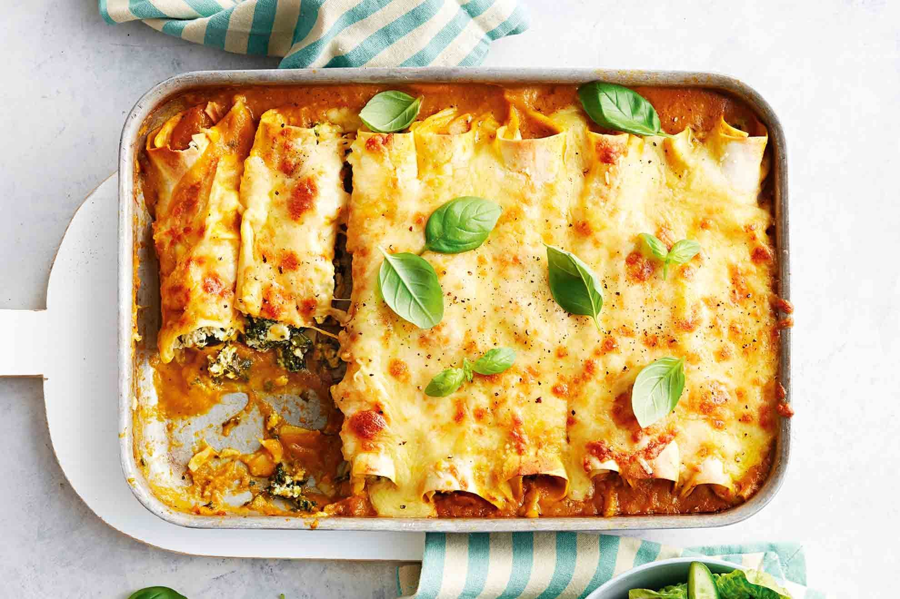

Cannelloni

Lasagna style cannelloni
Cannelloni is a great deal a lot like lasagna, both trading certain benefits and drawbacks between the two. But first, let's make some.
Ingredients
- 500g cannelloni style pasta
- 500g ground meat, either beef or pork
- 3 medium sized onions, finely chopped
- 5 garlic cloves, crushed
- 100g of thinly diced cabbage
- 1l of finest quality tomato sauce (important!)
- Bechamel sauce (100g of flour, 25g butter, 200ml milk, nutmeg powder)
- Approx 150g of grated cheese
- Fry up mince, onions, cabbage and add crushed garlic, season to taste
- Add tomato sauce and simmer for 10-15 minutes. Make sure the mixture is right consistency- moist enough to slide into cannelloni easily, but not so runny it spills both ends when put in baking pan.
- While the mince is simmering, grate some cheese and prepare the bechamel sauce
- Now take a teaspoon and fill in the empty cannelloni tubes with the mince. To avoid spillage from the other end while filling the pasta, hold the tube upright against the base of the pan, before placing it sideways.
- Once the tubes are all filled, cover with grated cheese and cover everything in bechamel sauce. Make sure there's plenty of it, as the moisture from the sauce will help cannelloni to soften up during the baking process
- Bake at 200 C for 30-40 minutes, or until pasta is soft enough
The why of Cannelloni
As mentioned previously, the dish is very much lasagna with a different pasta. I find cannelloni to be easier of the two to make, since no planned layering (don't you hate running out of bechamel/mince/cheese on upper layers) or quartering of pasta sheets is necessary. There is, however, a certain lack of that lasagna-ey cake-like texture many might end up missing while enjoying their cannelloni. Either way, you will enjoy this delish family dinner.
Buon appetito!